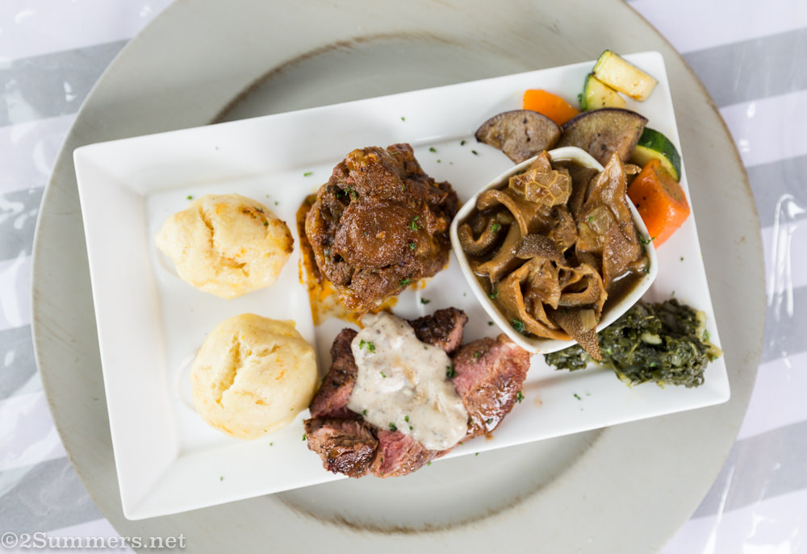
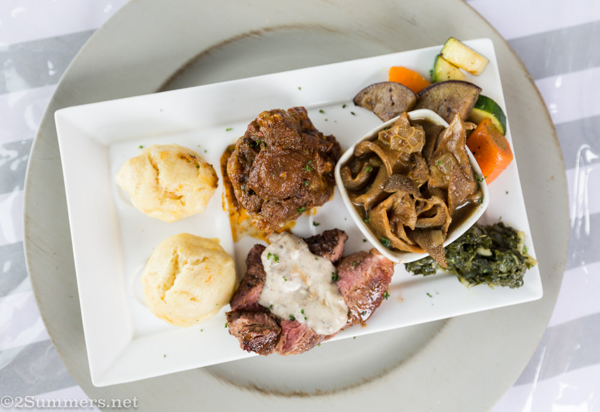

OUR RESTUARANT
Welcome to an excellent exploration of Africa's culture through it's cuisine at "HLOGI'S HOT BITS".
African cuisine is known by its sophisticated use of aromatic spices and herbs since ancient days.
Food is an integral part of Africa's culture with varied cuisines differing according to its countries and culture.
Our cuisine is distinguished by a great variety of food, spices and cooking techniques.

 
